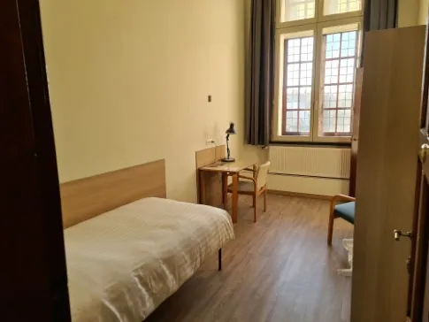

1
12 min · 0.94 km

Monastery guesthouse · Closest bed
Tongerlo Abbey · Gastenkwartier
Abdijstraat 40 · Bisschopshuis & Prelatuur
~12 min · 0.94 km
not public
5 single + 4 double
5 single rooms in Bisschopshuis (en-suite, WiFi) plus 4 doubles in the Prelatuur; meals taken communally in the refectory [10].
Not for a Michelin weekend. Multi-night minimum, advance booking only, no walk-ins, "participation in liturgical prayer times greatly valued" [10].